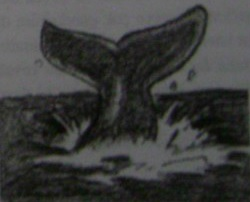

Küçük bir balina izleme gemisinin güvertesindesiniz; Dört bir yanınız mavi okyanusla çevrili. Derinliklerin gizemli yaratıklarını izlemek için küpeşteden eğildiğinizde tuzlu sular yüzünüzü ıslattı. Ve işte ordalar: Bir balina ailesi yakın bir yerde su yüzüne çıktı! Aşağıdakilerden hangisi bu aileyi en iyi tanımlar?
1. Devasa annesinin peşi sıra yüzen küçük bir bebek balina.
2. Annesinin karnına sokulan bir bebek balina.
3. Bebekleri ile yüzen anne ve baba balinalar.
4. Su püskürterek kendi başına yüzen bir bebek balina.
